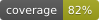

Serverless Orchestrator of Serverless Workers





- `sosw`:
Framework to simplify the design of AWS Lambda functions in Python
Set of tools for orchestrating asynchronous invocations of AWS Lambda functions.
Essential components of `sosw` orchestration are implemented as AWS Lambda functions themselves.
Note
Please pronounce sosw correctly: /ˈsɔːsəʊ/
Contents: